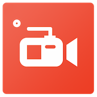

此处提供三个有关视频录制的软件，均可在安卓5.0+运行。前两个为自带剪辑的录屏软件，后一个为格式转换工具
录制的视频大小与时间长短有关，可在录制前调整参数(如：分辨率和比特率)或转换格式来减小占用的内存
软件均来自互联网，本站仅确认其可用性。具体使用细节请下载后自行设置与探索

Version: 5.7.2
Released: May 11th
运行平台: Android
▶录制游戏、视频、app
▶无需Root
▶视频转Gif
▶视频剪裁与拼接
▶添加BGM、截取屏幕
▶前置镜头录制，内置音源和人声同时录制
▶视频添加字幕和压缩视频
▶支持最高录屏画质：视频分辨率 1440P(2K), 视频画质 12.0Mbps, 帧数 60fps
▶无水印录制
▶前置镜头录制，内置音源与人声录制可能需要Root权限
录像画质设置：1mbps~12mbps
录像分辨率设置：240p~1080p
录像帧数设置：24fps~60fps
Version: 1.0.1.0
Released: July 1st
运行平台: Android
▶录制游戏、视频、app
▶可加入开头结尾
▶添加BGM、截取屏幕
▶用全高清(Full HD)录屏录制超生动的视频
▶支持最高录屏画质：视频分辨率 1440P(2K), 视频画质 12.0Mbps, 帧数 60fps
▶自带多种视频编辑功能（剪辑, 拼接, 分割, 导入BGM, 图片提取等）让录制的视频更好看！
▶无水印/添加专属水印
▶Android 5.0及后续系统免Root
▶前置镜头录制，内置音源和人声同时录制
录像画质设置：0.5mbps~12mbps
录像分辨率设置：240p~1080p
录像帧数设置：5fps~60fps
Version: 5.0
运行平台: Android
▶转换与裁剪各种格式的视频与音频
▶调整比特率和画质压缩视频
▶调整比特率和频率压缩音频
▶可适用于不同格式的文件:Mp4，Flv，Avi，Mkv，Mp3，Flac，Wma，Ogg，M4a，Wav
▶高度可自定义的各类参数，包括自定义大小，编解码器，宽高比，fps，频率，比特率......
▶视频的各类特色功能:修剪，裁剪，提取音频，逆向视频，无损切割视频，视频转GIF，删除水印
下载点1 密码:4ksw
下载点2 提取码:abqr